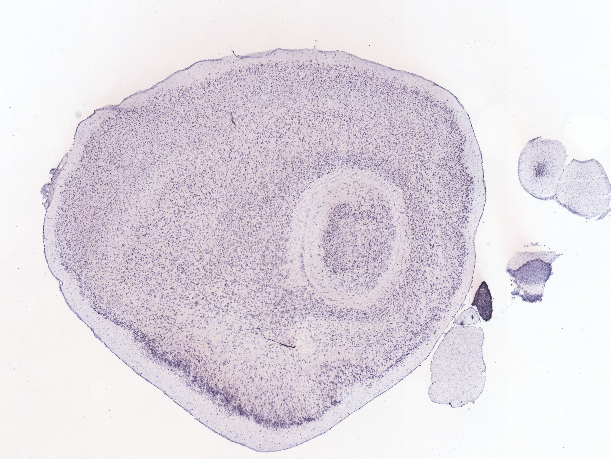
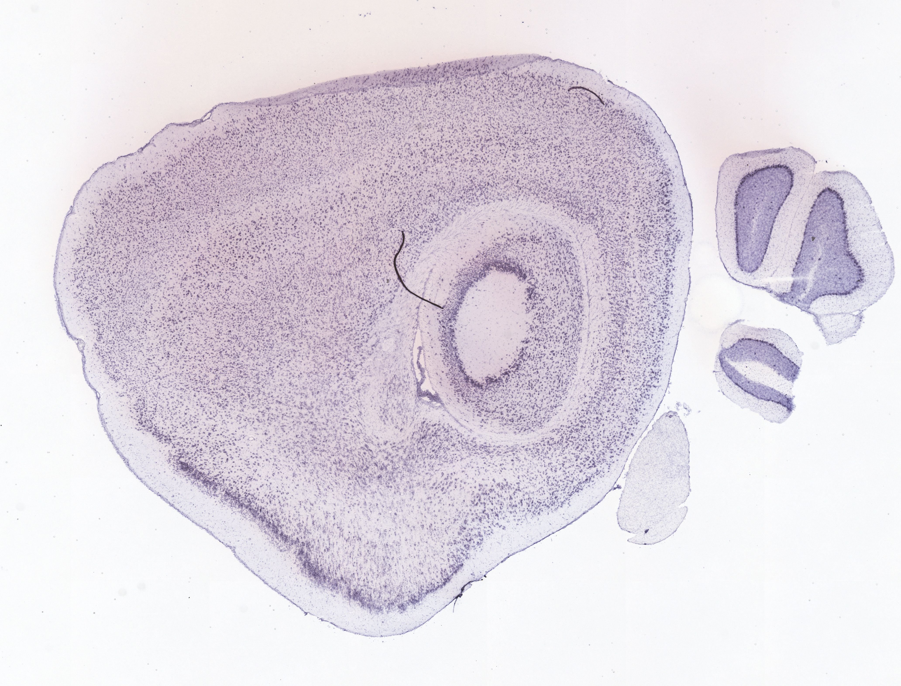
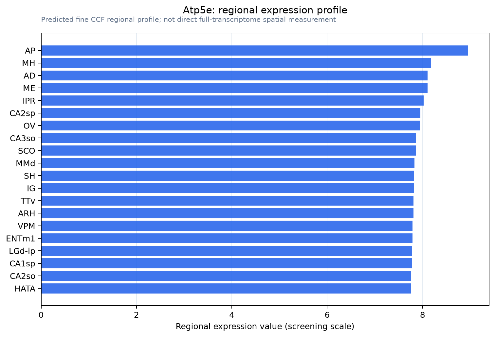
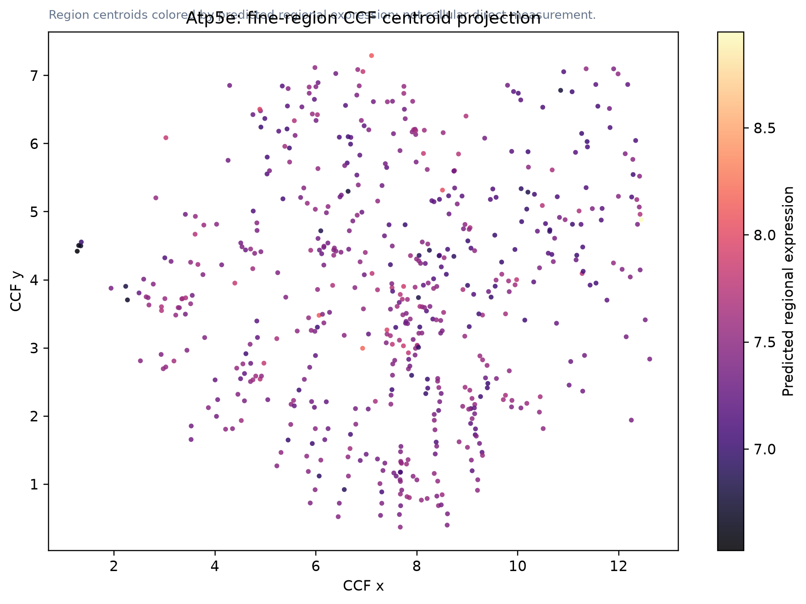

Atp5e
ATP synthase F(1) complex subunit epsilon, mitochondrial (ATPase subunit epsilon) (ATP synthase F1 subunit epsilon)
Spatial tier: STRICT_EXCLUSIVE · Class: ION_CHANNEL · Top region: AP (Area postrema) · Positive regions: 12/554
42.6Discovery Score
39.3Targetability Score
CEvidence grade C
What this means: Atp5e: predicted fine-region profile is strict-exclusive, with 12 positive regions out of 554 (limit 12); direct spatial validation is required.
Direct spatial evidence
DIRECT ALLEN ISH

DIRECT ALLEN ISH

Regional expression figure

Predicted WMB × fine-CCF profile; not direct full-transcriptome spatial measurement.
CCF fine-region location

Region-centroid map colored by predicted expression; not a direct cellular expression image.
Spatial profile
Evidence and specificity
- Evidence status
- PREDICTED_FINE
- Direct sources
- None; predicted localization only
- Exclusive threshold
- 12 positive regions out of 554
- Spatial specificity
- 0.312
- Top-region fraction
- 0.085
- Filter status
- PASS
Interpretation limits
- Cell-type-to-region projection is imputed expression, not direct spatial measurement.
- Adult reference atlases do not establish stability across age, sex, strain, state, or disease.
- Transcript abundance does not guarantee protein abundance or genetic-tool performance.